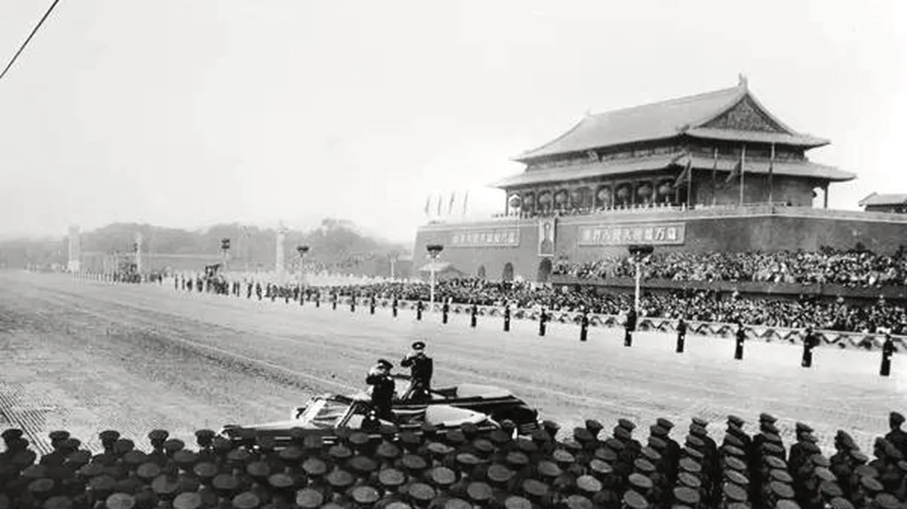
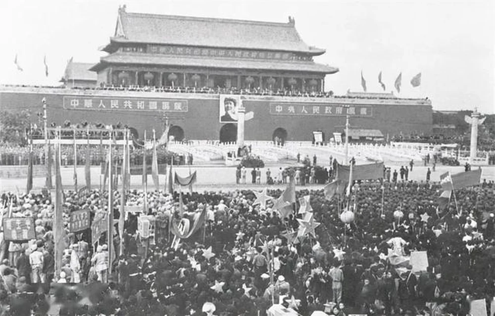
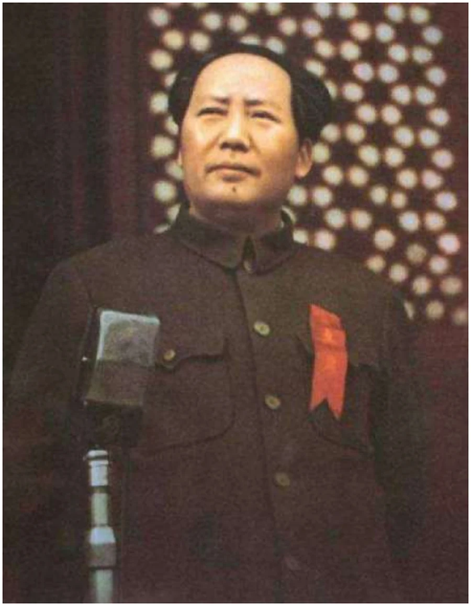
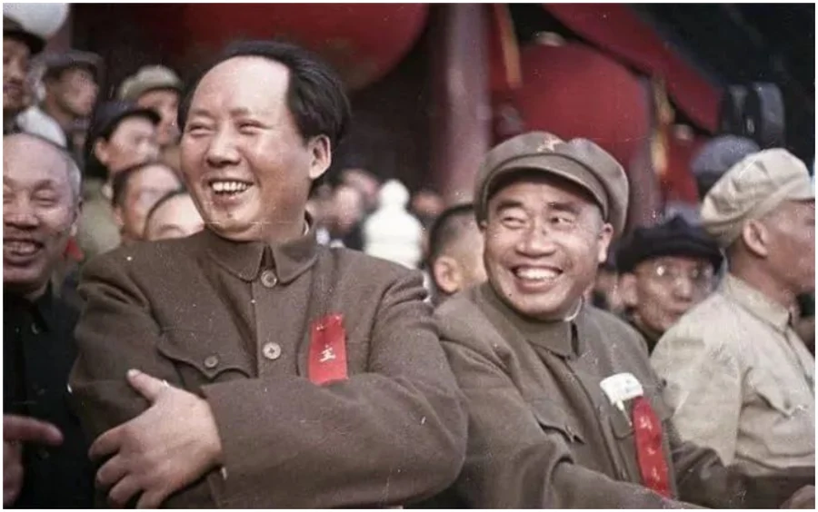

1949 · 10 · 1 · 北京 天安门
配图参考 1950 年天安门城楼形制
这一天，是这样走到的
中国人民政治协商会议第一届全体会议在北平中南海怀仁堂开幕。
通过关于国都、纪年、国歌、国旗的四个决议案：定都北平并改名北京；以《义勇军进行曲》为代国歌；以五星红旗为国旗。
通过起临时宪法作用的《中国人民政治协商会议共同纲领》。
选举毛泽东为中央人民政府主席；当晚人民英雄纪念碑奠基典礼在天安门广场举行。
中央人民政府委员会第一次会议在中南海勤政殿举行，主席、副主席及委员宣布就职。
首都三十万军民齐聚天安门广场。毛泽东庄严宣告中华人民共和国中央人民政府成立，亲手升起第一面五星红旗。



